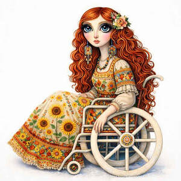

Trade Mark Journal No.2026/012 20 March 2026
UK00004339077 11 February 2026 (9,16,20,24,25,28,41)

- Class 9
- Phone cases; Cell phone cases; Mobile phone cases; Mobile telephone cases; Cases for mobile phones; Cellular telephone cases; Cases for telephones; Protective cases for cell phones; Carrying cases for cell phones; Carrying cases for cellular phones; Protective cases for mobile phones; Leather cases for mobile phones; Leather cases for cellular phones; Carrying cases for mobile phones; Cases for smartphones; Carrying cases for mobile telephones; Carrying cases for cellular telephones; Laptop cases; Cases adapted for mobile phones; Camera cases; Waterproof smartphone cases; Waterproof cases for smart phones; Keyboard cases for smartphones; Battery cases; Cases for PDAs; Cases for headphones; Waterproof cases for smartphones; Camcorder cases; Computer cases; Protective cases for smartphones; Leather cases for smartphones; Carrying cases for mobile computers; Cell phone covers; Tablet computer cases; Cases for tablet computers; Chargers for cell phone; Mobile phone covers; Beeper carrying cases; Laptop carrying cases; Waterproof camera cases; Protective cases for tablet computers; Computer carrying cases; Mobile phone chargers; Cases for diskettes; Cases for smartphone incorporating a keyboard; Leather cases for tablet computers; Mobile phone screen protectors; Mobile phone speakers; Carrying cases for radios; Protective cases for laptops; Camcorder waterproof cases; Cases for loudspeakers; Screen protectors for cell phones; Mobile phone battery chargers; Cell phone battery chargers for use in vehicles; Mobile phone ring holders; Mobile phone straps; Memory card cases; Holders for cell phones; Cases adapted for tablet computers; Flip covers for cellular phones; Animated cartoons; Cartoons (Animated -); Downloadable animated cartoons; Animated cartoons in the form of cinematographic films; Animated films; Motion picture films; Video films.
- Class 16
- Books; Non-fiction books; Fiction books; Series of non-fiction books; Comic books; Writing books; Manuscript books; Books for children; Cookery books; Ledgers [books]; Copy books; Printed books; Music books; Covers for books; Series of fiction books; Coloring books; Educational books; Fantasy books; Autograph books; Story books; Colouring books; Wirebound books; Hymn books; Cheque books; Travel books; Ledger books; Painting books; Printed music books; Reference books; Baby books [storybooks]; Picture books; Gift books; Poster books; Cook books; Drawing books; Guide books; Commemorative books; Information books; Index books; Religious books; Covers for cheque books; Prayer books; Check books; Guest books; Resource books; Recipe books; Hand books; Scrap books; Memorandum books; Jackets of paper for books; Flip books; Data books; Coupon books; Sticker books; Exercise books; School writing books; Dictation books; Account books; Song books; Manga comic books; Agenda books; Birthday books; Children's books; Activity books; Note books; Bill books; Date books; Log books; Baby books; Rule books; Sketch books; Visitors books; Pop-up books; Covering materials for books; Appointment books; Composition books; Signature books; Wedding books; Score books; Telephone books; Coloring books for adults; Address books; Music note books; Writing or drawing books; Expense books; Binding materials for books and papers; Books featuring fantasy stories; Pocket books [stationery]; Graphic art books; Novels; Blank journal books; Books featuring fictional stories; Holders for cheque books; Art prints; Art etchings; Graphic art reproductions; Graphic art prints; Art pictures; Fine art prints; Works of art of paper; Art mounts; Photographic or art mounts; Decoration and art materials and media; Printed art reproductions; Works of art made of paper; Colored craft and art sand; Adhesives for art use; 3D wall art made of paper; Arts, crafts and modelling equipment; Works of art and figurines of paper and cardboard, and architects' models; Paper for use in the graphic arts industry; 3D wall art made of card; Arts and crafts paint kits; Arts and craft paint kits; Papers for use in the graphic arts industry; Painting sets for artists; Print characters; Prints; Printed publications; Publications (Printed -); Graphic prints; Photo prints; Canvas prints; Printed stationery; Printed periodicals; Printed paper signs; Printed brochures; Printed booklets; Cartoon prints; Photographic prints; Silk screen prints; Annuals [printed publications]; Printed calendars; Printed advertisements; Supercalendered printing paper; Color prints; Printed advertising boards of paper; Printed patterns; Pictorial prints; Photographs [printed]; Printed photographs; Laser printing paper; Printed newsletters; Printed invitations; Forms, printed; Printed forms; Printed periodical publications; Printed music; Paper stock [printing paper]; Printed packaging materials of paper; Printed cartoon strips; Printed pamphlets; Printed programmes; Reel paper for printers; Printed tickets; Printed menus; Prints [engravings]; Engravings [prints]; Printed horoscopes; Printed reports; Paintings and calligraphic works; Art paper; Printing characters; Manga graphic novels; Computer game hint books; Cartoon strips; Comic strips; Romance novels; Graphic novels; Caricatures; Comics; Comic strips [printed matter]; Sketches; Newspaper cartoons; Cartoon strips [printed matter]; Animation cels; Newspaper comic strips; Comic strips' comic features; Graphic drawings; Comic magazines; Printed comic strips; Drawings; Graphic reproductions; Picture postcards; Magazines featuring video and computer games; Children's comics; Storybooks; Drawing triangles; Watercolor pictures; Poster magazines; Postcards and picture postcards; Illustration boards; Graphic representations; Printed stories in illustrated form; Book covers; Writing sets; Writing paper; Photograph album pages.
- Class 20
- Soft furnishings [cushions]; Furniture and furnishings; Padded furniture; Cushions [furniture]; Furniture of plastics material for bathrooms; Upholstered furniture; Pouffes [furniture]; Furniture; Bamboo furniture; Beds, bedding, mattresses, pillows and cushions; Stuffed furniture; Wooden furniture; Scented pillows; Works of art of cork; Works of art of plastic; Works of art of bamboo; Works of art of hay; Glass for use in framing art; Works of art of straw; Works of art of nutshell; Works of art made of wax; Works of art made of wood; Works of art made of plaster; Works of art made of amber; Works of art made of amberoid; 3D wall art made of wood; Works of art of wood, wax, plaster or plastic; Art (Works of -) of wood, wax, plaster or plastic; Work stations [furniture].
- Class 24
- Soft furnishings; Furnishing and upholstery fabrics; Furnishing fabrics; Velours for furniture; Fibre fabrics for the manufacture of the exterior coverings of furniture; Silk fabrics for furniture; Textiles in the form of window furnishings; Woven furnishing fabrics; Woven fabrics for furniture; Woven fabrics for use in the manufacture of clothing for use in clean rooms; Loose furniture coverings; Coverings (Loose -) for furniture; Loose coverings for furniture; Coverings of plastics for furniture; Furniture coverings made of plastic materials; Protective coverings for furniture [loose]; Coverings of textile and of plastic for furniture (not fitted); Furniture coverings of textile; Coverings (Furniture -) of textile; Loose covers made of textile materials for furniture; Fabrics for use in the manufacture of exterior coverings for chairs; Furnishing fabrics in the piece; Coverings of textile and of plastic for furniture (unfitted); Furnishing fabrics being textile piece goods; Furniture coverings of plastic; Woven fabrics for sofas; Textile covers [loose] for furniture; Textile goods for use as bedding; Textiles for interior decorating; Furniture coverings (unfitted); Woven fabrics for armchairs; Textile fabrics for making into linens; Curtains of textiles or plastic; Fireproof upholstery fabrics.
- Class 25
- Plush clothing; Clothing; Knitwear [clothing]; Jackets [clothing]; Ready-to-wear clothing; Woolen clothing; Furs [clothing]; Layettes [clothing]; Clothing layettes; Garments for protecting clothing; Linen clothing; Headbands [clothing]; Headbands for clothing; Gloves [clothing]; Gloves as clothing; Clothes; Aprons [clothing]; Maternity clothing; Kerchiefs [clothing]; Jerseys [clothing]; Denims [clothing]; Shorts [clothing]; Cashmere clothing; Capes (clothing); Oilskins [clothing]; Gabardines [clothing]; Leather (Clothing of -); Silk clothing; Leather clothing; Clothing of leather; Collars [clothing]; Parts of clothing, footwear and headgear; Knitted clothing; Veils [clothing]; Hoods [clothing]; Windproof clothing; Corsets [clothing, foundation garments]; Embroidered clothing; Wristbands [clothing]; Bandeaux [clothing]; Belts [clothing]; Belts for clothing; Rainproof clothing; Waterproof clothing; Casual clothing; Visors [clothing]; Jackets being sports clothing; Jackets (Stuff -) [clothing]; Stuff jackets [clothing]; Bottoms [clothing]; Playsuits [clothing]; Ready-made clothing; Clothing for leisure wear; Trunks being clothing; Woven clothing; Latex clothing; Infant clothing; Leisure clothing; Clothing for sports; Sports clothing; Ties [clothing]; Drawers [clothing]; Drawers as clothing; Athletic clothing; Clothing for children; Muffs [clothing]; Bodies [clothing]; Clothing for babies; Tops [clothing]; Clothing for infants; Weatherproof clothing; Clothing for cycling; Pockets for clothing; Fabric belts [clothing]; Water-resistant clothing; Triathlon clothing; Handwarmers [clothing]; Clothing for skiing; Beach clothing; Thermal clothing; Chaps (clothing); Cowls [clothing]; Men's clothing; Fishing clothing; Dance clothing; Mitts [clothing]; Braces for clothing; American football shorts; Boy shorts [underwear].
- Class 28
- Soft toys; Soft sculpture plush toys; Soft sculpture toys; Soft toys in the form of elks; Soft toys in the form of animals; Furnishings for doll houses; Doll house furnishings; Smart plush toys; Plush toys; Clothing for dolls; Doll clothing; Fantasy character toys; Toy human characters; Plastic character toys; Models for use with role playing games; Role play games; Play sets for action figures; Role playing games; Doll costumes; Play figures; Toy action figurines; Mascot dolls; Drawing toys; Toy action figures; Toy balloons; Toy figurines; Clothing for toy figures; Toy figures; Collectable toy figures; Modeled plastic toy figurines; Sketching toys; Toy dolls; Toy animals; Stuffed toy animals; Masks (Toy -); Toy masks; Bobble-head dolls.
- Class 41
- Entertainment; Theatre entertainment; Television entertainment; Cinema entertainment; Musical entertainment; Interactive entertainment; Music entertainment services; Entertainment services; Television entertainment services; Education, entertainment and sports; Sports entertainment services; Radio entertainment; Cabaret entertainment services; Live entertainment; Tv entertainment services; Interactive entertainment services; Nightclub services [entertainment]; Entertainment information; Information (Entertainment -); On-line entertainment; Gaming services for entertainment purposes; Booking of entertainment; Entertainment services in the nature of arranging social entertainment events; Radio entertainment services; Corporate entertainment services; Live entertainment services; Popular entertainment services; Hospitality services (entertainment); Corporate hospitality (entertainment); Entertainment services in the nature of organizing social entertainment events; Provision of musical entertainment; Audio entertainment services; Cinematographic entertainment services; Entertainment club services; Club entertainment services; Club services [entertainment]; Video entertainment services; Education, entertainment and sport services; Provision of entertainment; Jazz music entertainment services; Animated musical entertainment services; Television and radio entertainment services; Radio and television entertainment services; Entertainment in the nature of theater productions; Organising of entertainment; Artistic management of entertainment venues; Entertainment services for children; Production of live entertainment; Television and radio entertainment; Radio and television entertainment; Entertainment services in the form of cinema performances; Radio entertainment production; Gaming machine entertainment services; Entertainment in the nature of dinner theater productions; Entertainment, sporting and cultural activities; Online entertainment services; Organisation of musical entertainment; Services for the production of entertainment in the form of television; Live entertainment production services; Production of television entertainment features; Online interactive entertainment; Children's entertainment services; Arranging of musical entertainment; Entertainment in the nature of television news shows; Production of audio entertainment; Entertainment booking services; Lighting productions for entertainment purposes; Musical group entertainment services; Provision of live entertainment; Internet radio entertainment services; Entertainment information services; Production of live entertainment events; Hosting of entertainment events; Booking of entertainment halls; Rental of entertainment halls; Laser show services [entertainment]; Video game entertainment services; Arranging of visual entertainment; Entertainment in the nature of circuses; Conducting of entertainment events; Presentation of live entertainment events; Festivals (Organisation of -) for entertainment purposes; Cultural, educational or entertainment services provided by art galleries; Entertainment in the form of television programmes (Services providing -).
Emma Dolan
Michael Huyton